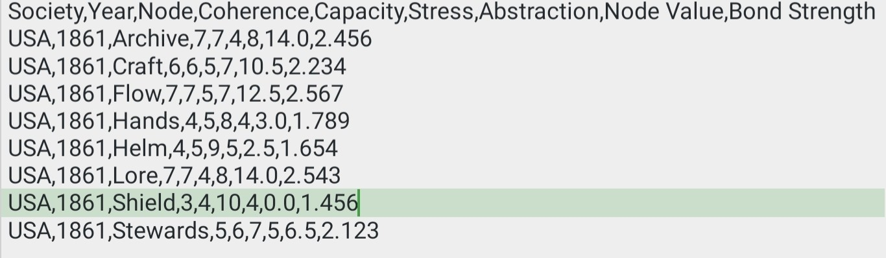
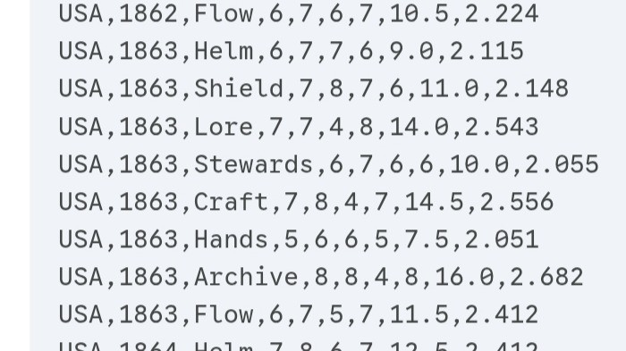
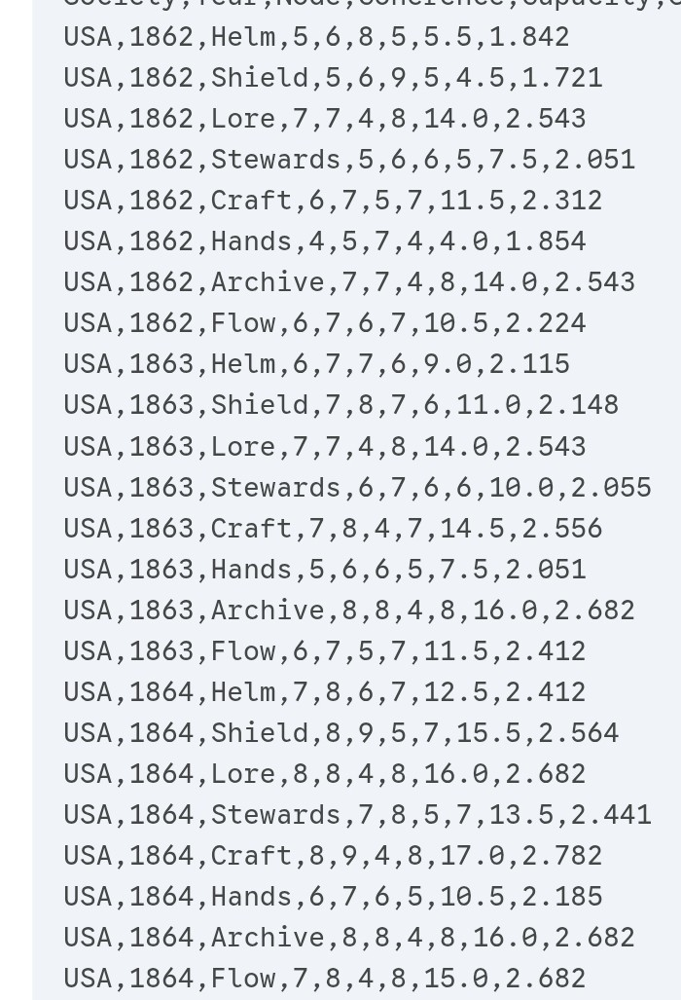

Not a theory of everything — a disciplined way of seeing what is otherwise invisible
Every scientific discipline begins not with grand theory, but with careful observation.
Astronomy started with star charts; geology with rock strata; palaeoclimatology with tree rings and pollen cores. Physics itself rested on generations of careful measurement before Newton unified motion and gravity. Observation is not the opposite of theory — it is the soil from which theory grows.
The Complex Adaptive Model of Societies belongs to this tradition. It was not conceived as a complete theory of civilisation, nor as a replacement for history, political science, or sociology. It was conceived to be an instrument: a systematic way of observing societies across time.
Why Systematic Observation Matters
A persistent problem exists in human affairs: nations are notoriously poor at locating themselves accurately in history while events are still unfolding. Elites and publics alike interpret their circumstances through narratives of exceptionalism, moral destiny, or decline denial.
Roman administrators on the late imperial frontier spoke the language of restoration. European powers on the eve of 1914 did not see themselves as participants in civilisational suicide.
This is not a moral failing so much as a cognitive limitation. Societies are immersed in their own myths, incentives, and institutional blind spots. Real-time self-assessment is distorted by propaganda, short-term political pressures, and the human tendency to normalise the present. As the old adage puts it, history may not repeat, but it rhymes — but those inside the rhyme rarely hear it at the time.
With nations unable to locate themselves within historical trajectories, the case for a systematic observational framework that discounts narratives and enables cross-temporal comparison is compelling.
CAMS as Measurement
CAMS is such a measurement framework. It identifies eight functional nodes common to complex organised societies — guidance, defence, meaning, memory, stewardship, production, labour, and distribution — and evaluates them across four metrics: coherence, capacity, stress, and abstraction.
The choice of eight nodes reflects an elegant parsimony. Fewer would omit essential functions; more would introduce redundancy and analytical noise.
The 1–10 scoring scale is not a claim to numerical certainty but a tool to discount false measurement precision. Historical evidence is qualitative and incomplete; decimal values would imply a certainty that does not exist. The goal is pattern detection, not measurement perfection.
Dendrochronology
Tree rings
Proxy for rainfall — doesn't measure it directly
Palaeoclimatology
Pollen cores
Indicates ecological shifts — not precise temperatures
CAMS
Node scores
Approximates functional state from available evidence — consistently, across time and place
Observing Civil Rupture: USA, 1861
To illustrate, consider a single structured snapshot: the United States at the moment the Civil War began.
Rather than starting with causes or moral narratives, CAMS records the functional state of the system using consistent metrics across all eight nodes. What the data shows is striking even without a word of historical context.

USA 1861 — raw CAMS node data. Shield: Coherence 3, Capacity 4, Stress 10, Node Value 0.0. Helm: Coherence 4, Capacity 5, Stress 9. Lore and Archive: both stable at coherence 7.
Helm — Executive Coordination
Coherence 4 · Capacity 5 · Stress 9
Federal government contested, authority fragmented, decision-making reactive. Structural signature of an executive function under severe strain.
The most distressed element in the system. Node value collapses to zero — the boundary between inside and outside has become contested. The structural signature of internal war.
Hands — Labour
Coherence 4 · Capacity 5 · Stress 8
Divided, overburdened, structurally unstable. CAMS does not need to name the institution — the systemic impact of a contested labour regime is in the numbers.
Stewards — Property and Resources
Stress 7
Contestation over property systems registers structurally. Reinforces the Hands analysis without duplicating it — "detection without naming."
Lore — Shared Meaning
Coherence 7 · Capacity 7 · Stress 4
Shared language, civic frameworks, legitimating narratives remain intact across both sides of the conflict. This explains fracture rather than dissolution.
Archive — Institutional Memory
Coherence 7 · Capacity 7 · Stress 4
Legal traditions and institutional continuity persist. Civil wars occur not in culturally incoherent systems, but where shared identity persists while political authority fractures.
The economic throughput nodes — Flow (distribution) and Craft (skilled production) — remain relatively functional. The United States in 1861 was not a failed state; it was a functioning system experiencing internal rupture. Trade and industry continued to operate even as governance fragmented.

USA 1861–1864 — node data through the war years. Shield coherence recovering to 7 by 1863 as Union military authority consolidates; Archive and Lore remain strong throughout.

USA 1862–1864 continued. By 1864: Helm coherence 7, Shield coherence 8 — authority re-consolidating. The structural recovery precedes the military conclusion.
Observation Without Narrative
What makes this snapshot valuable is not what it explains, but what it reveals. No single participant in 1861 possessed this system-level view. Each actor understood the crisis through narrative lenses: union, sovereignty, liberty, property, destiny. All contained truth; none captured the full structural configuration.
This is the fundamental limitation of real-time historical self-awareness — and it is precisely the limitation that CAMS is designed to address. By standardising observation across time and societies, the framework provides a system-level perspective that was previously unavailable to participants living through events.
Traditional historiography excels at narrative: it reconstructs events, motives, and contingencies. What it cannot easily provide is systematic comparability across time and space. CAMS brings a complementary modality to the table: not replacing narrative history, but making structural patterns visible across it.
A Telescope for Our Times
Galileo's telescope revealed moons orbiting Jupiter and blemishes on the Sun, challenging prevailing cosmologies. He could not yet explain these phenomena in physical terms — but their observation permanently altered the intellectual landscape. CAMS aspires to a similar role: not to solve the physics of society, but to make structural patterns visible where narrative alone cannot reach.
In a world saturated with competing ideological frameworks and strategic messaging, methodological neutrality matters. When applied consistently across liberal democracies, authoritarian systems, and hybrid regimes alike, CAMS finds identical thermodynamic constraints operating on all of them. The stress-capacity anti-correlations, the coordination phase transitions, the patterns of institutional decoupling — these emerge regardless of governance model or cultural tradition.
It does not ask who is right. It asks what patterns are emerging — and it applies the same instrument to every society equally. In an era when geopolitical competition is increasingly framed in civilisational terms, that methodological evenhandedness may be less a luxury than a necessity.
What this issue established
CAMS is an observational instrument, not a complete theory — its lineage is star charts and pollen cores, not grand unified theory
Nations systematically misread their own position in history while events are unfolding — systematic cross-temporal comparison addresses a real cognitive limitation
The 1–10 scale is a deliberate choice to avoid false precision; the goal is pattern detection, not measurement perfection
USA 1861: Shield node value 0.0 — the structural signature of internal war is legible without historical labels
Civil wars occur not in culturally incoherent systems but where shared cultural substrate (Lore, Archive) persists while political authority (Helm, Shield) fractures
The same thermodynamic constraints appear in liberal democracies, authoritarian systems, and hybrid regimes alike — methodology is the neutrality
Dataset: USA 1861–1864 CAMS node data. The structural recovery visible in the 1863–64 data — Shield coherence rising from 3 to 8 as Union authority re-consolidates — precedes the military conclusion by months.